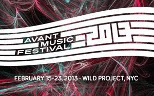

past performance | |||
|
Avant Music Festival 2013 Five nights of music from the evolving Avant-Garde showtimes:February 15-23, 2013 |
 | ||
|
The fourth annual Avant Music Festival celebrates the 10th anniversary of Avant Media with an afternoon performance of John Cage's Apartment House 1776, the continuing evolution of Randy Gibson's Apparitions Of The Four Pillars and evenings of vocal works from downtown new music empresario Nick Hallett and punk-classical master Kitty Brazelton. Schedule of Events: FRIDAY, FEBRUARY 15, 2013 - 8PM SATURDAY, FEBRUARY 16, 2013 - 4PM SATURDAY, FEBRUARY 16, 2013 - 5PM - FREE ADMISSION SATURDAY, FEBRUARY 16, 2013 - 8PM SUNDAY, FEBRUARY 17, 2013 - 3PM FRIDAY, FEBRUARY 22, 2013 - 8PM SATURDAY, FEBRUARY 23, 2013 - 8PM For more information: avantmedia.org/amf2013. | |||
upcoming performances |
|||
 |
|||
| EVQ Film Festival 2018 August 20-25 |
|||
performance archives |
|||
| 2018 | 2017 | 2016 | 2015 |
| 2014 | 2013 | 2012 | 2011 |
| 2010 | 2009 | 2008 | 2007 |